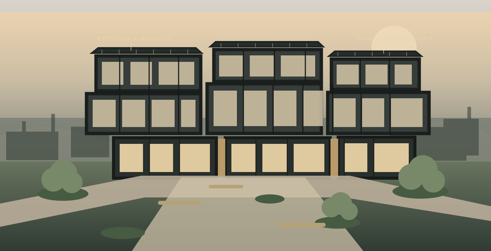
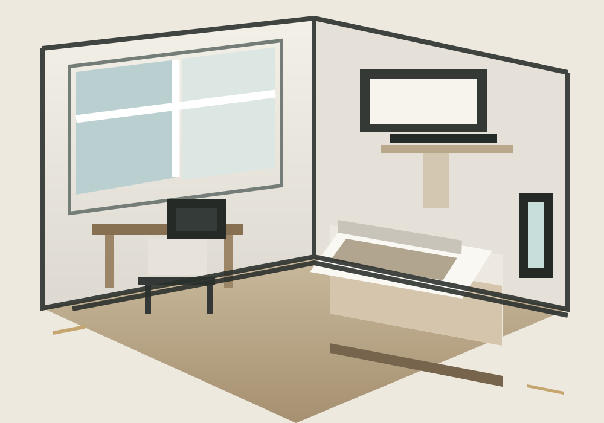

Furnished, private and made for student life.

PROPOSED DEVELOPMENT · DESIGN CONCEPT
NESCO STUDENT VILLAGES SOUTH AFRICA
Elevated student
living across
South Africa.
A proposed network of thoughtfully designed modular student communities for focus, connection and growth in university towns nationwide.
01 / 05 VISION FOR STUDENT LIVING
01
Proposed developmentConcept-stage vision · subject to approvals, funding and final design
02
Modular constructionPlanned steel-frame and insulated-panel building system
03
Flagship conceptPotchefstroom · indicative 2027 first cohort
A NATIONAL NETWORK, BUILT AROUND YOU
POTCHEFSTROOM · NORTH WEST
More than a room.
A place to belong.
Student life deserves a better foundation. NesCo Student Villages is a proposed modular community combining considered private spaces with the shared moments that make a place feel like home.
Explore the concept →◇
Flagship proposal · PotchefstroomConcept imagery illustrates a proposed development, not an existing village.
01 / 04
Proposed village conceptArchitectural study · not an existing site
PROPOSED DEVELOPMENT
High-speed fibre for study and everything after.
Landscaped courtyards and urban growing spaces.
Secure access and 24/7 site monitoring.
Solar, battery and water storage provisions.
Quiet study lounges alongside social spaces.
A ROOM TO MAKE YOUR OWN
Good design makes
room for more.
Every detail has a purpose: space to study, space to rest, and the privacy to find your own rhythm.

 ORIGINAL CONCEPT ART · PROPOSED DESIGN
ORIGINAL CONCEPT ART · PROPOSED DESIGNYOUR OWN SPACE
The Executive
Single Studio
An independent, light-filled studio with everything in its right place.
- ✓ Furnished bedroom & private ensuite
- ✓ Built-in desk and storage
- ✓ Compact kitchenette
- ✓ Acoustic wall insulation

DESIGNED AS A MODULAR SYSTEM
Built in modules.
Planned for people.
The proposed village is planned around repeatable building modules, with light-gauge steel framing and insulated panels. The illustration shows a design concept; final construction details depend on engineering and approvals.
STEEL FRAME · INSULATED PANELS · REPEATABLE MODULES01Built in modules.
Made for real life.
Made for real life.
Light-gauge steel framing and insulated panel systems offer a precise, efficient building approach, with adaptable layouts designed around the way students live.
↗BEYOND STUDENT LIVING
Modular thinking.
Many possibilities.
Flexible, well-built spaces for the sectors that keep communities moving.
01
Industrial & mining
Ruggedised site offices and operational spaces, from 18 to 36 m².
Request portfolio brochure ↗02
Retail & commercial
Purpose-built retail boxes and considered pop-up hubs.
Request portfolio brochure ↗03
Civil & education
Turnkey modular schools, clinics and community infrastructure.
Request portfolio brochure ↗REGISTER INTEREST · PROPOSED DEVELOPMENT
Help shape
what comes next.
This is an early proposal, not an open residence. Share your preferred campus and room concept to register interest while plans develop. Timing and specifications remain indicative.